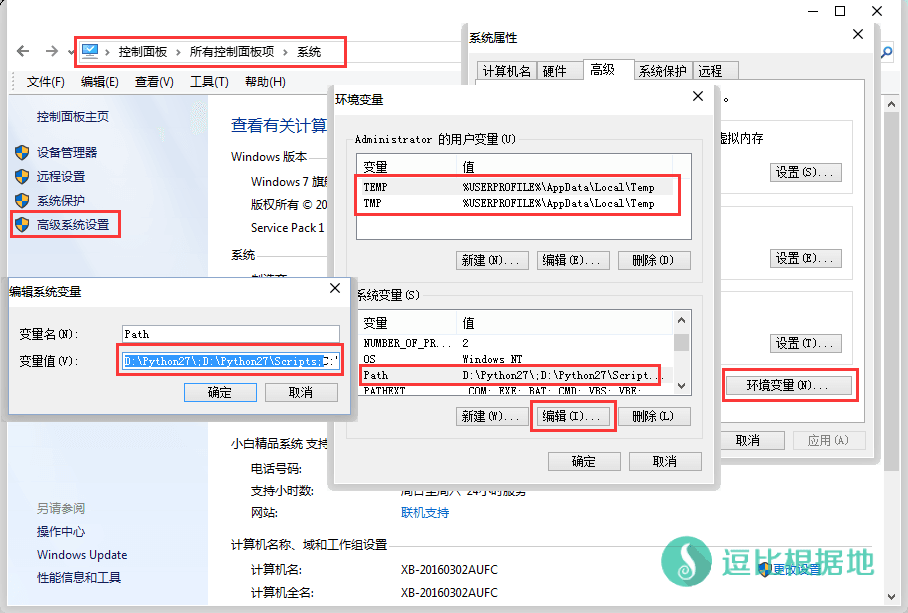
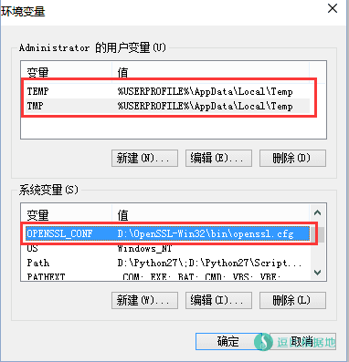
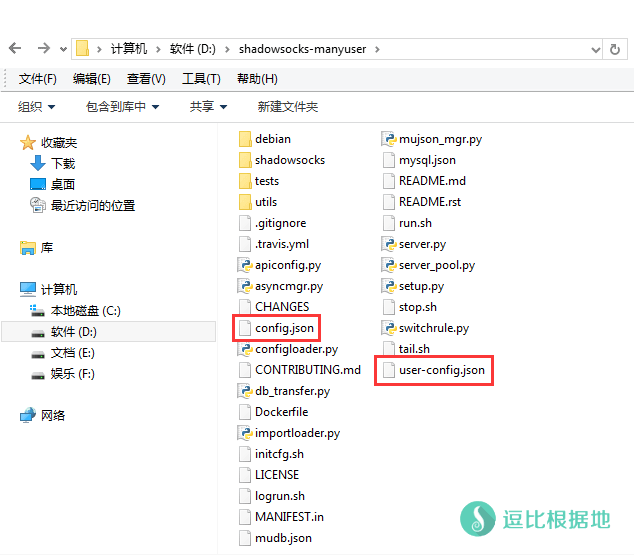
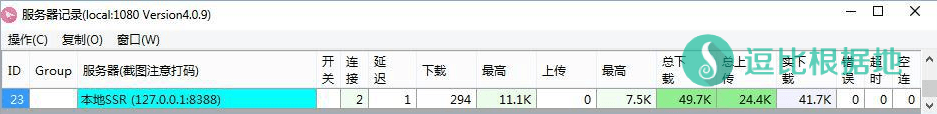

有一些人曾经问过我怎么在Windows系统上面安装运行ShadowsocksR服务端，那时候我觉得没有意义，就没写教程，不过这段时间也没什么SSR基础教程好写的了，就研究研究写个教程算了。
网上简单查了查，也就 SSR的Github wiki中简单提及了教程，不过不够详细，所以我就在此基础上完善完善。
运行环境
ShadowsocksR服务端是Python编写的，所以需要Python环境。
我现在手上没有 海外的Windows服务器，所以只是在本地自己搭建测试了一下，测试系统是 Windows 7，至于 Windows Server 服务器系统是否安装了Python我也不清楚，大家自己检查吧。
另外，ShadowsocksR服务端因为加密方式，所以需要安装OpenSSL。
安装Python
打开 Python官网-下载页面 ，找到 Python 2.7.xx - xxxx-xx-xx ，然后根据你的 Windows操作系统位数 下载对应的安装包：
- Download Windows x86 MSI installer（32位下载这个）
- Download Windows x86-64 MSI installer（64位下载这个）
下载后开始安装。

安装OpenSSL
打开 OpenSSL官网-下载页面，翻到网页中间，然后根据你的 Windows操作系统位数 下载对应的安装包：
- Win32 OpenSSL v1.x.xx Light（32位下载这个）
- Win64 OpenSSL v1.x.xx Light（64位下载这个）
注意是那个 3MB 左右大小的文件，30MB 左右的是开发者用的。

设置环境变量
Python和OpenSSL安装完后，我们就可以开始设置环境变量了。
首先点击左下角开始菜单 —— 运行 —— 输入 CMD 并回车。
然后在打开的CMD窗口中输入： Python -V
以为上面的安装步骤中，我们已经选择了自动添加环境变量，所以应该是直接如下显示：
C:\Users\Administrator>python -V Python 2.7.13
如果显示命令不存在，那么说明环境变量设置失败，需要手动设置。
点击左下角开始菜单 — 控制面板 — 系统 — 高级系统设置 — 高级 选项卡 — 环境变量 按钮 — 系统变量 Path
如下图所示，Path变量值前面应该会有： D:\Python27\;D:\Python27\Scripts;
如果没有就自己添加，当然，这个只是 Python的环境变量，OpenSSL也需要设置环境变量。
注意：安装目录请自行替换为你的安装目录！
完整的环境变量格式： D:\Python27\;D:\Python27\Scripts;D:\OpenSSL-Win32\bin\;XXXXXXXXX
XXXXXXXXX 指的是原来系统自带的环境变量值，只要把Python和OpenSSL的环境变量值加到 系统自带的环境变量值前面就好了。
注意：每个环境变量值都需要用 分号 ; 来分割开！
设置完后一路确定，然后重新打开 CMD窗口，输入 Python -V 测试Python的环境变量是否设置。
然后输入 openssl 命令并回车，然后会发现变成这样：
C:\Users\Administrator>openssl OpenSSL>
然后继续输入 help 命令并回车，就会出来一大堆的说明：
出现这个，就说明OpenSSL的环境变量设置完成。
如果设置环境变量正确，但是依然提示 openssl不是内部命令 ，那么尝试重启电脑/服务器，部分出现这种问题的人重启后得到了解决（前提是环境变量配置无误）。
C:\Users\Administrator>openssl OpenSSL> help Standard commands asn1parse ca ciphers cms crl crl2pkcs7 dgst dhparam dsa dsaparam ec ecparam enc engine errstr exit gendsa genpkey genrsa help list nseq ocsp passwd pkcs12 pkcs7 pkcs8 pkey pkeyparam pkeyutl prime rand rehash req rsa rsautl s_client s_server s_time sess_id smime speed spkac srp ts verify version x509 # 后面省略... OpenSSL>

在OpenSSL安装完后，系统变量中会自动添加一个变量，如下图所示，如果你的没有，那么请自行添加。
变量名：OPENSSL_CONF
变量值：D:\OpenSSL-Win32\bin\openssl.cfg

Windows系统安装运行ShadowsocksR服务端的难点主要就是 这两个环境变量问题，所以如果操作不好，可以联系我~
安装ShadowsocksR服务端
下载ShadowsocksR服务端
下载ShadowsocksR最新服务端文件：Github项目地址、Github下载地址
解压到任意目录，然后进入解压后得到的 shadowsocksr-manyuser 文件夹，复制一份 config.json 文件并改名为 user-config.json 。
注意：为了避免出错或不兼容，Python/OpenSSL/ShadowsocksR服务端都不要安装在 目录包含中文字符和特殊字符的文件夹中！

配置文件
打开配置文件 user-config.json ，并修改为你要设置的 端口/密码/加密方式/协议/混淆 等参数。
配置文件各项参数说明：Github wiki
注意：ShadowsocksR服务端最新版本默认加密方式从 aes-256-cfb 改为 aes-128-ctr 了。
{
"server": "0.0.0.0",
"server_ipv6": "::",
"server_port": 8388,
"local_address": "127.0.0.1",
"local_port": 1080,
"password": "m",
"method": "aes-128-ctr",
"protocol": "auth_aes128_md5",
"protocol_param": "",
"obfs": "tls1.2_ticket_auth_compatible",
"obfs_param": "",
"speed_limit_per_con": 0,
"speed_limit_per_user": 0,
"additional_ports" : {}, // only works under multi-user mode
"timeout": 120,
"udp_timeout": 60,
"dns_ipv6": false,
"connect_verbose_info": 0,
"redirect": "",
"fast_open": true
}
启动/停止ShadowsocksR服务端
启动ShadowsocksR服务端
打开CMD窗口，然后依次输入：
D: # 进入D盘 cd shadowsocksr-manyuser\shadowsocks # 进入ShadowsocksR子目录 python server.py -c D:\shadowsocksr-manyuser\user-config.json # 运行ShadowsocksR服务端
注意：请更换 ShadowsocksR服务端目录为自己安装的目录。
不出意外的话，就会如这样显示（可能会有所差别）：
C:\Users\Administrator>python server.py -c D:\shadowsocksr-manyuser\user-config.json
loaded collections.OrderedDict
IPv6 support
INFO: loading config from D:\shadowsocksr-manyuser\shadowsocks\../shadowsocks\../user-config.json
2017-02-09 18:34:29 INFO util.py:85 loading libcrypto from D:\OpenSSL-Win32\bin\libcrypto.dll
2017-02-09 18:34:29 INFO shell.py:80 ShadowsocksR 3.0.2 2017-01-08
2017-02-09 18:34:29 INFO asyncdns.py:324 dns server: [('8.8.4.4', 53), ('8.8.8.8', 53)]
2017-02-09 18:34:29 INFO server.py:106 server start with protocol[auth_aes128_md5] password [m] method [aes-128-ctr] obfs [tls1.2_ticket_auth_compatible] obfs_param []
2017-02-09 18:34:29 INFO server.py:122 starting server at [::]:8388
2017-02-09 18:34:29 INFO server.py:142 starting server at 0.0.0.0:8388
停止ShadowsocksR服务端
如果你需要停止 ShadowsocksR服务端，只需要在CMD窗口按下 Ctrl+C 按键就可以终止ShadowsocksR服务端的运行了。
启动后，你就可以尝试连接一下ShadowsocksR服务端了。
我是在本机上面测试的，密码什么的都是配置文件默认的，所以直接是 127.0.0.1:8388 ，然后ShadowsocksR设置全局模式，尝试访问国内网站，如果不报错，那么说明成功了。
如果你是在外部Windows服务器上面运行的，那么你需要关闭防火墙或者开放防火墙端口，我很久没用了，也忘记怎么搞了，估计谷歌很容易搜索到。
注意：如果是本机测试，建议把ShadowsocksR服务端的本地监听端口和ShadowsocksR客户端的本地监听端口分开（默认都是1080）。

参考资料：Github Wiki：https://github.com/breakwa11/shadowsocks-rss/wiki/Server-Setup-on-Windows
转载请超链接注明：逗比根据地 » Windows系统 安装运行 ShadowsocksR服务端 简单教程
责任声明：本站一切资源仅用作交流学习，请勿用作商业或违法行为！如造成任何后果，本站概不负责！


D:\shadowsocksr-manyuser\shadowsocks>python server.py -c D:\shadowsocksr-manyuse r\user-config.json IPv6 support Traceback (most recent call last): File "server.py", line 215, in main() File "server.py", line 38, in main config = shell.get_config(False) File "D:\shadowsocksr-manyuser\shadowsocks\..\shadowsocks\shell.py", line 299, in get_config check_config(config, is_local) File "D:\shadowsocksr-manyuser\shadowsocks\..\shadowsocks\shell.py", line 129, in check_config encrypt.try_cipher(config['password'], config['method']) File "D:\shadowsocksr-manyuser\shadowsocks\..\shadowsocks\encrypt.py", line 46 , in try_cipher Encryptor(key, method) File "D:\shadowsocksr-manyuser\shadowsocks\..\shadowsocks\encrypt.py", line 90 , in __init__ random_string(self._method_info[1])) File "D:\shadowsocksr-manyuser\shadowsocks\..\shadowsocks\encrypt.py", line 11 9, in get_cipher return m[2](method, key, iv, op) File "D:\shadowsocksr-manyuser\shadowsocks\..\shadowsocks\crypto\openssl.py", line 89, in __init__ load_openssl() File "D:\shadowsocksr-manyuser\shadowsocks\..\shadowsocks\crypto\openssl.py", line 41, in load_openssl raise Exception('libcrypto(OpenSSL) not found') Exception: libcrypto(OpenSSL) not found 怎么办啊0.0请问这样的情况要怎么解决 loaded collections.OrderedDict IPv6 support Exception in thread Thread-1: Traceback (most recent call last): File "C:\Users\yumem\AppData\Local\Programs\Python\Python37\lib\threading.py", line 917, in _bootstrap_inner self.run() File "server.py", line 39, in run self.obj.thread_db(self.obj) File "G:\shadowsocksr\db_transfer.py", line 226, in thread_db db_instance = obj() File "G:\shadowsocksr\db_transfer.py", line 291, in __init__ self.load_cfg() File "G:\shadowsocksr\db_transfer.py", line 297, in load_cfg with open(config_path, 'rb+') as f: FileNotFoundError: [Errno 2] No such file or directory: 'usermysql.json'就像 Linux 系统下，如果你没有用后台方式启动 SSR 服务端，那么你断开SSH链接后，SSR 服务端也是会关闭的。
后面的x.x.x.x是我客户端的IP
mysql.json重命名为usermysql.json等，具体参考 ShadowsocksR 多用户版服务端安装教程C:\shadowsocksr-manyuser\shadowsocksr-manyuser>python server.py -c C:\shadowsock sr-manyuser\shadowsocksr-manyuser\user-config.json IPv6 support 2017-10-18 16:27:33 INFO util.py:85 loading libcrypto from C:\OpenSSL-Win64\ bin\libeay32.dll 2017-10-18 16:27:33 INFO asyncdns.py:324 dns server: [('8.8.4.4', 53), ('8.8 .8.8', 53)] 2017-10-18 16:27:34 INFO shell.py:72 ShadowsocksR 3.4.0 2017-07-27 2017-10-18 16:27:34 ERROR db_transfer.py:266 Traceback (most recent call last ): File "C:\shadowsocksr-manyuser\shadowsocksr-manyuser\db_transfer.py", line 248 , in thread_db rows = db_instance.pull_db_all_user() File "C:\shadowsocksr-manyuser\shadowsocksr-manyuser\db_transfer.py", line 373 , in pull_db_all_user import cymysql ImportError: No module named cymysql Traceback (most recent call last): File "server.py", line 58, in main thread.join(10.0) File "C:\Python27\lib\threading.py", line 951, in join self.__block.wait(delay) File "C:\Python27\lib\threading.py", line 359, in wait _sleep(delay) KeyboardInterrupt什么原因C:\shadowsocksr-manyuser\shadowsocks>python server.py -c C:\shadowsocksr-manyuse r\user-config.json IPv6 support 2017-09-14 12:01:40 INFO util.py:85 loading libcrypto from c:\windows\system 32\libeay32.dll 2017-09-14 12:01:40 INFO shell.py:72 ShadowsocksR 2.8.2 2017-09-14 12:01:40 INFO asyncdns.py:324 dns server: [('8.8.4.4', 53), ('8.8 .8.8', 53)] 2017-09-14 12:01:40 INFO server.py:106 server start with protocol[auth_aes12 8_md5] password [x] method [aes-128-ctr] obfs [tls1.2_ticket_auth_compatible ] obfs_param [] 2017-09-14 12:01:40 INFO server.py:122 starting server at [::]:8388 2017-09-14 12:01:40 INFO server.py:142 starting server at 0.0.0.0:8388沒error显示..但无法连接...已经吧8388 1080端口打开了..郁闷C:\shadowsocksr-manyuser\shadowsocksr-manyuser\shadowsocks>python server.py -c u ser-config.json IPv6 support Traceback (most recent call last): File "server.py", line 215, in main() File "server.py", line 38, in main config = shell.get_config(False) File "C:\shadowsocksr-manyuser\shadowsocksr-manyuser\shadowsocks\../shadowsock s\shell.py", line 299, in get_config check_config(config, is_local) File "C:\shadowsocksr-manyuser\shadowsocksr-manyuser\shadowsocks\../shadowsock s\shell.py", line 129, in check_config encrypt.try_cipher(config['password'], config['method']) File "C:\shadowsocksr-manyuser\shadowsocksr-manyuser\shadowsocks\../shadowsock s\encrypt.py", line 46, in try_cipher Encryptor(key, method) File "C:\shadowsocksr-manyuser\shadowsocksr-manyuser\shadowsocks\../shadowsock s\encrypt.py", line 90, in __init__ random_string(self._method_info[1])) File "C:\shadowsocksr-manyuser\shadowsocksr-manyuser\shadowsocks\../shadowsock s\encrypt.py", line 119, in get_cipher return m[2](method, key, iv, op) File "C:\shadowsocksr-manyuser\shadowsocksr-manyuser\shadowsocks\../shadowsock s\crypto\openssl.py", line 89, in __init__ load_openssl() File "C:\shadowsocksr-manyuser\shadowsocksr-manyuser\shadowsocks\../shadowsock s\crypto\openssl.py", line 41, in load_openssl raise Exception('libcrypto(OpenSSL) not found')请问大神这是怎么回事啊？Microsoft Windows [版本 6.1.7601] 版权所有 (c) 2009 Microsoft Corporation。保留所有权利。 C:\Users\Administrator>cd C:\Users\Administrator\Desktop\shadowsocksr-manyuser\s hadowsocks C:\Users\Administrator\Desktop\shadowsocksr-manyuser\shadowsocks>python server.p y -c config.json IPv6 support Traceback (most recent call last): File "server.py", line 215, in main() File "server.py", line 38, in main config = shell.get_config(False) File "C:\Users\Administrator\Desktop\shadowsocksr-manyuser\shadowsocks\../shad owsocks\shell.py", line 299, in get_config check_config(config, is_local) File "C:\Users\Administrator\Desktop\shadowsocksr-manyuser\shadowsocks\../shad owsocks\shell.py", line 129, in check_config encrypt.try_cipher(config['password'], config['method']) File "C:\Users\Administrator\Desktop\shadowsocksr-manyuser\shadowsocks\../shad owsocks\encrypt.py", line 46, in try_cipher Encryptor(key, method) File "C:\Users\Administrator\Desktop\shadowsocksr-manyuser\shadowsocks\../shad owsocks\encrypt.py", line 90, in __init__ random_string(self._method_info[1])) File "C:\Users\Administrator\Desktop\shadowsocksr-manyuser\shadowsocks\../shad owsocks\encrypt.py", line 119, in get_cipher return m[2](method, key, iv, op) File "C:\Users\Administrator\Desktop\shadowsocksr-manyuser\shadowsocks\../shad owsocks\crypto\sodium.py", line 71, in __init__ load_libsodium() File "C:\Users\Administrator\Desktop\shadowsocksr-manyuser\shadowsocks\../shad owsocks\crypto\sodium.py", line 42, in load_libsodium raise Exception('libsodium not found') Exception: libsodium not found你更换其他加密方式就不会提示这个了。
C:\shadowsocksr-manyuser\shadowsocks>python server.py -c user-config.json IPv6 not support Traceback (most recent call last): File "server.py", line 215, in main() File "server.py", line 38, in main config = shell.get_config(False) File "C:\shadowsocksr-manyuser\shadowsocks\../shadowsocks\shell.py", line 299, in get_config check_config(config, is_local) File "C:\shadowsocksr-manyuser\shadowsocks\../shadowsocks\shell.py", line 129, in check_config encrypt.try_cipher(config['password'], config['method']) File "C:\shadowsocksr-manyuser\shadowsocks\../shadowsocks\encrypt.py", line 46 , in try_cipher Encryptor(key, method) File "C:\shadowsocksr-manyuser\shadowsocks\../shadowsocks\encrypt.py", line 90 , in __init__ random_string(self._method_info[1])) File "C:\shadowsocksr-manyuser\shadowsocks\../shadowsocks\encrypt.py", line 11 9, in get_cipher return m[2](method, key, iv, op) File "C:\shadowsocksr-manyuser\shadowsocks\../shadowsocks\crypto\openssl.py", line 89, in __init__ load_openssl() File "C:\shadowsocksr-manyuser\shadowsocks\../shadowsocks\crypto\openssl.py", line 41, in load_openssl raise Exception('libcrypto(OpenSSL) not found') Exception: libcrypto(OpenSSL) not found C:\shadowsocksr-manyuser\shadowsocks>windows server2003 如上错误提示C:\shadowsocksr-manyuser\shadowsocks>python server.py -c user-config.json loaded collections.OrderedDict IPv6 not support Traceback (most recent call last): File "server.py", line 215, in main() File "server.py", line 38, in main config = shell.get_config(False) File "C:\shadowsocksr-manyuser\shadowsocks\../shadowsocks\shell.py", line 166, in get_config with open(config_path, 'rb') as f: IOError: [Errno 2] No such file or directory: 'user-config.json'求解